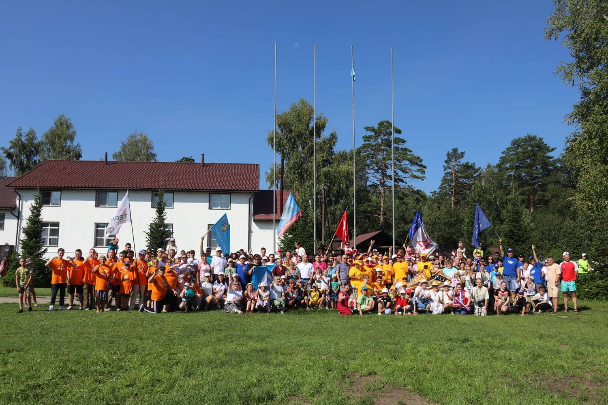

Корпоративный праздник «День здоровья» является традиционно ярким летним событием для всех работников АО ХК "Барнаульский станкостроительный завод". Он объединяет сотрудников разных подразделений и предприятий компании. В рамках праздника прошли спортивные соревнования, которые позволили участникам продемонстрировать свою физическую подготовку и командный дух.
Также был организован квест «Форт Боярд». Команды соревновались в ловкости, сообразительности и умении работать в команде, проходя различные испытания и решая головоломки.
В результате праздника сотрудники получили заряд энергии и позитива, укрепили командные связи и научились работать в условиях стресса. Этот день стал отличным примером того, как корпоративные мероприятия могут способствовать развитию сотрудников и укреплению корпоративной культуры.
«Станкостальконструкция» отличилась в личном зачёте по стрельбе. Наши ребята заняли 2 и 3 место.